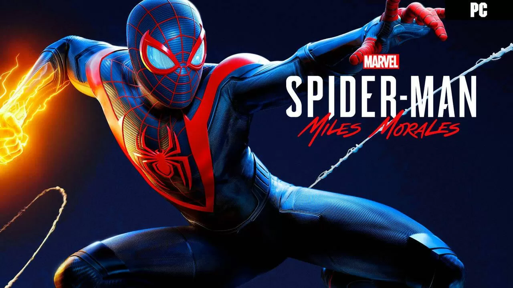

-ANÁLISIS-
SPIDERMAN
Con el estreno de PlayStation 5 el pasado 2020 también nos llegó Spider-Man: Miles Morales, un juego que se lanzó para darnos una primera muestra del poder de la nueva consola de Sony y que además sirve de puente entre Spider-Man y el futuro Spider-Man 2 que se lanzará teóricamente durante el próximo 2023.
Dos años después de su debut en PS5 y PS4, ahora Miles Morales, sustituto temporal de Spider-Man en la ciudad de Nueva York durante las fechas navideñas, llega a nuestro PC para ofrecernos esa misma entrega puente con un muy buen combate, un personaje encantador y un precio que pese a que no sale al mismo importe que Spider-Man: Remastered sigue pudiendo ser un impedimento para el tipo de juego que tenemos delante seguir leyendo...
Valoración: 9/10
MARIO
Mario + Rabbids: Kingdom Battle demostró que hasta la idea más aparentemente loca y extraña puede acabar resultando en todo un juegazo si hay el suficiente talento, pasión y buen hacer detrás. Tras dejarnos a todos descolocados con su anuncio al enterarnos de que el icónico fontanero de Nintendo protagonizaría una aventura de estrategia por turnos al más puro estilo XCOM junto a los Rabbids de Ubisoft, el crossover acabó por convertirse en una de las mejores obras de todo el catálogo de Nintendo Switch. Un título que no solo desbordaba cariño, mimo y pasión por ambas licencias, sino que también hacía gala de un diseño de juego impecable que consiguió lo que parecía imposible: hacer accesible para todo el mundo un género complejo e intimidante, pero sin renunciar por ello a una buena profundidad capaz de satisfacer a los veteranos con ganas de una experiencia más ágil y directa.
Por suerte para todos, el experimento fue todo un éxito de ventas y crítica, y a día de hoy acumula más de 10 millones de jugadores únicos, una recepción muy positiva que ha servido para que Nintendo y Ubisoft hayan vuelto a unir sus fuerzas para desarrollar su secuela, Mario + Rabbids Sparks of Hope, un juego mucho más grande, ambicioso y divertido que trae consigo multitud de novedades que nos han enamorado y que elevan la fórmula a nuevas alturas seguir leyendo...
Valoración: 9.3/10
UNCHARTED
Sony parece haberse desatado en el mercado de los videojuegos para PC y en este final de año 2022 va a ofrecernos una buena cantidad de conversiones de sus títulos que llegarán a nuestros ordenadores como Spider-Man: Miles Morales o Sackboy Una aventura a lo grande además de Uncharted: Colección Legado de los Ladrones que nos va a permitir disfrutar de la última aventura de Nathan Drake y de ese capítulo independiente protagonizado por Chloe Frazer y Nadine Ross. En Vandal ya hemos podido probar este port para la plataforma del teclado y el ratón y, durante las próximas líneas, vamos a repasar sus opciones gráficas, su rendimiento y otros pormenores de una versión que, en líneas generales,cumple bastante bien y está a la altura de los últimos trabajos de Sony en este sentido seguir leyendo...